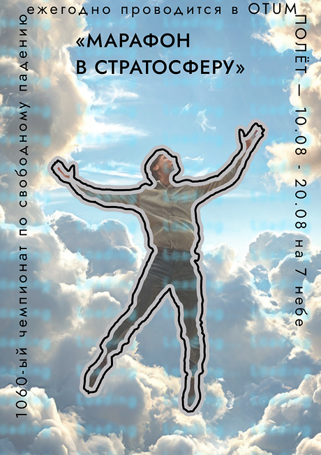
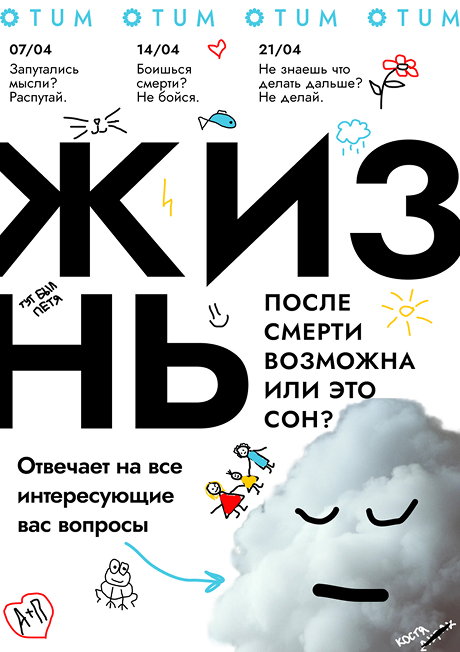
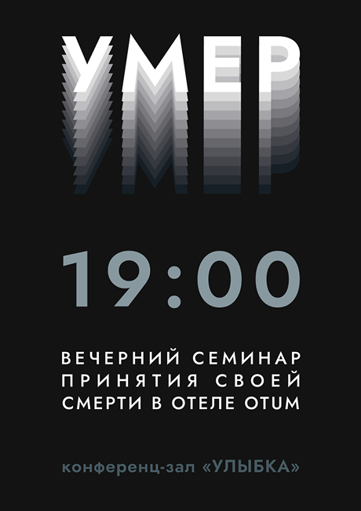

Ежегодный чемпионат по свободному падению в воздухе «Марафон в стратосферу» в категории «полёт» состоится уже через два месяца. Просим, желающих принять участие, подойти на ресепшен, и вам выдадут ваш порядковый номер, а также расскажут о правилах проведения мероприятия.

Не знаете, что вас ждет дальше? Запутались, а распутаться не можете? Тогда вам на наши лекции «ЖИЗНЬ»! Там вам расскажут о способах преодоления ваших страхов, развеют мифы и просто облегчат смерть, ответив на все вопросы.

Вы умерли и пора уже это признать, но ни в коем случае не думайте, что это конец. Лучше приходите на ежедневные семинары «УМЕР» по принятию своей смерти, которые проходят в 19:00 сразу после ужина, и наконец ощутите, что значит полный покой.